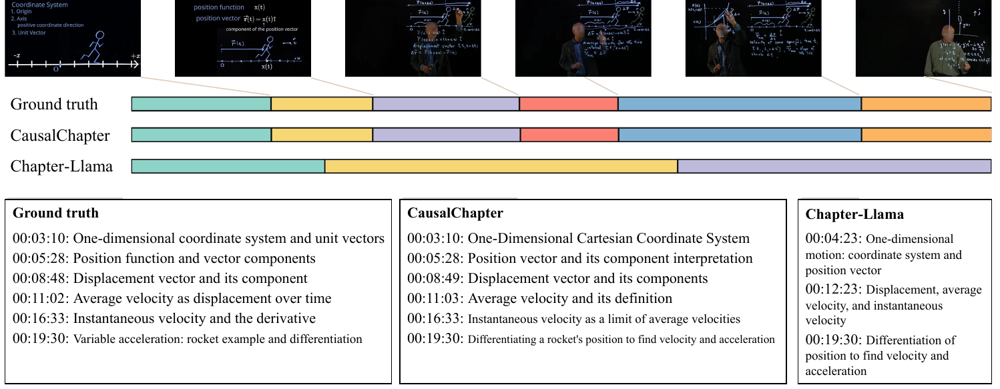

平滑转场难定位
视觉和措辞仍然连续，但预测依赖已经发生变化；只看相似度容易错过真正的主题切换。
业务需要把一部长视频转成带时间边界、情节或主题完整、跨章节一致的描述，才能继续做检索、热点分析与预测。
传统 DVC 关注局部事件；真正的长视频内容底座还必须回答三个问题：什么时候进入新阶段、当前章节究竟讲什么、前文哪些设定仍然重要。
视觉和措辞仍然连续，但预测依赖已经发生变化；只看相似度容易错过真正的主题切换。
分段生成降低成本，却会丢失前文定义、人物关系或逻辑前提。
时间边界、章节粒度和描述一致性决定了下游是否能直接检索、统计与建模。

遮蔽前一窗口的语义单元，观察后一窗口的重建变化；依赖骤降提示平滑转场。
移除候选历史章节，按当前描述变化量重新排序，而不是仅依赖语义相似。
这里衡量的是预测层面的可观测影响，不宣称恢复真实世界因果结构。

坐标系、位置函数、位移、速度在表面上高度相关，长上下文模型容易把它们合成少数大段。
相邻内容相似，不代表它们对后续预测的支持关系相同；依赖变化提供了额外边界信号。
更细且稳定的内容单元，才方便下游定位某一情节、概念或热点的发生区间。